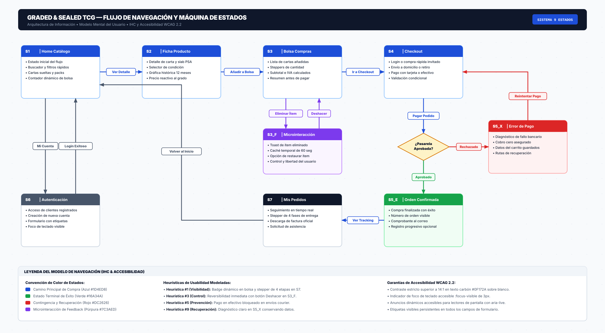

| Estado Origen | Evento Disparador (Trigger) | Condición de Guarda (Guard) | Estado Destino | Respuesta del Sistema / Microinteracción |
|---|---|---|---|---|
| S1: Home y Catálogo | Clic sobre tarjeta de producto | Carta disponible en stock | S2: PDP | Transición de vista; renderizado de ficha técnica y gráfica a 12 meses. |
| S1: Home y Catálogo | Clic en [Mi Cuenta] | Cualquier estado | S6: Auth | Apertura de portal de login y registro con etiquetas accesibles. |
| S2: PDP | Selección de chip [PSA 8, 9, 10] | Opción disponible | S2: PDP | Actualización reactiva de precio en pantalla y recálculo de la curva de mercado. |
| S2: PDP | Clic en [Añadir a la bolsa] | Stock verificado en bóveda | S3: Bolsa | Incremento dinámico del badge en navbar (Bolsa +1) y toast accesible. |
| S3: Bolsa | Clic en [Eliminar ítem] | Cesta > 0 | S3_F: Feedback | Oculta producto, activa retención de 60s y despliega banner con botón [Deshacer]. |
| S3_F: Feedback | Clic en [Deshacer acción] | Dentro de los 60s | S3: Bolsa | Restaura ítem a la lista sin recargar página y reajusta subtotales. |
| S3: Bolsa | Clic en [Proceder al Checkout] | Cesta > 0 | S4: Checkout | Despliegue de carriles de compra (Usuario Frecuente vs Invitado Rápido). |
| S4: Checkout | Cambio a entrega [Retiro en Local] | Sucursal seleccionada | S4: Checkout | Envío se ajusta a $0.00 y se habilita la opción de pago en efectivo. |
| S4: Checkout | Envío de pago [Finalizar Compra] | Validación bancaria = OK | S5_E: Éxito | Generación de orden #PKM-2026-88941 y módulo de registro progresivo 1-clic. |
| S4: Checkout | Envío de pago [Finalizar Compra] | Fallo pasarela = DECLINED | S5_X: Error | Diagnóstico claro no destructivo; preserva datos y ofrece cambio a efectivo. |
| S5_X: Error | Clic en [Reintentar con otro método] | Datos preservados en memoria | S4: Checkout | Regreso al formulario con todos los campos intactos (sin reiniciar flujo). |
| S5_E: Éxito | Clic en [Ver Seguimiento de Pedido] | Orden activa existente | S7: Tracking | Línea de tiempo de 4 etapas (Recibido ➔ Preparación ➔ En Camino ➔ Entregado). |
El sistema proporciona microinteracciones en tiempo real en cada transición: el badge del carrito cambia inmediatamente con aria-live="polite", la gráfica de la PDP muta al cambiar variantes y el stepper de S7 señala la fase actual de custodia.
A través del sub-estado S3_Feedback, el usuario no teme equivocarse al gestionar su cesta; la acción destructiva de borrado ofrece una ventana de reversibilidad inmediata con [Deshacer acción].
El carril condicional en S4: Checkout inhabilita automáticamente el pago en efectivo si se solicita despacho por courier asegurado, imposibilitando la configuración de un pedido inconsistente.
En caso de fallo transaccional (S5_Error), el sistema aclara que no se cobró nada, explica la causa sin códigos crípticos y provee botones de reintento manteniendo los datos de entrega ya ingresados.